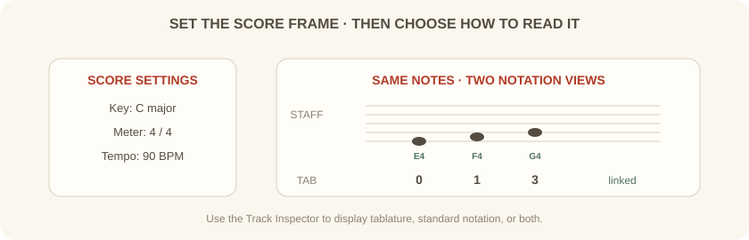
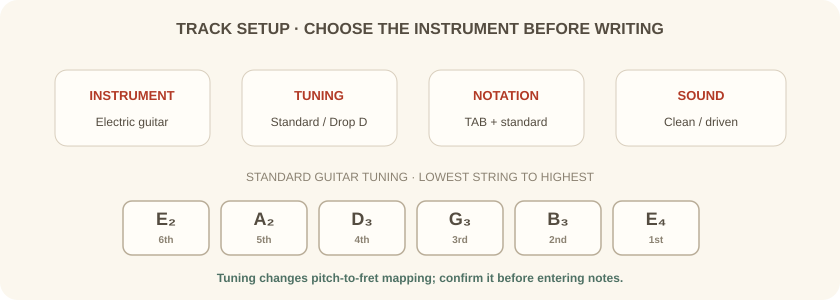

دورهٔ فرعی · Guitar Pro · جلسهٔ دوم از شش
پیش از نوشتن، چارچوب قطعه و مسیرهای ساز را درست میچینیم تا تبلچر و نت استاندارد با صدای مورد انتظار هماهنگ بمانند.
بخش اول
در ابتدای کار، میزاننما، سرکلید و سرعت را مطابق ایدهٔ موسیقایی تنظیم کن. برای یک تمرین ساده میتوانی از 4/4 و سرعت 90 BPM استفاده کنی. این مقادیر فقط نقطهٔ شروعاند و بعدا قابل تغییرند.
در Guitar Pro 8 این موارد را میتوان از پالت ویرایش یا با کلیک روی نشانهٔ مربوط در پارتیتور تغییر داد. میزاننما تعداد ضربها و ارزش نتِ هر ضرب را نشان میدهد.

بخش دوم
از Track → Add یا دکمهٔ افزودن در نمای سراسری، ساز را انتخاب کن. در پنجرهٔ ساخت مسیر، نوع ساز، نام مسیر، نوع نتنویسی، کوک و صدای اولیه را مشخص کن.
برای قطعهٔ گروهی، هر ساز را در مسیر جداگانه نگه دار. نامهایی مانند «گیتار ریتم» و «گیتار ملودی» هنگام پخش و خروجیگرفتن خواناترند.

بخش سوم
از بازرس مسیر یا پنجرهٔ تنظیم ساز، کوک و تعداد سیمها را بررسی کن. برای نمونه، Drop D سیم ششم را از E به D پایین میآورد. اگر پروژه از پیش نت دارد، هنگام تغییر کوک تصمیم بگیر که جای انگشتها حفظ شود یا زیر و بمی نتها ثابت بماند.
در بازرس مسیر، نمایش تبلچر، نت استاندارد یا هر دو را روشن کن. ورود نت در یکی از نمایشها در دیگری هم بازتاب پیدا میکند؛ این راهی خوب برای یادگیری رابطهٔ دسته و حامل است.
بخش چهارم
یک پارتیتور با مسیر گیتار بساز؛ میزاننما را روی 4/4، سرعت را روی 90 BPM، و نمایش مسیر را روی تبلچر بههمراه نت استاندارد بگذار. فایل اصلی را ذخیره کن.